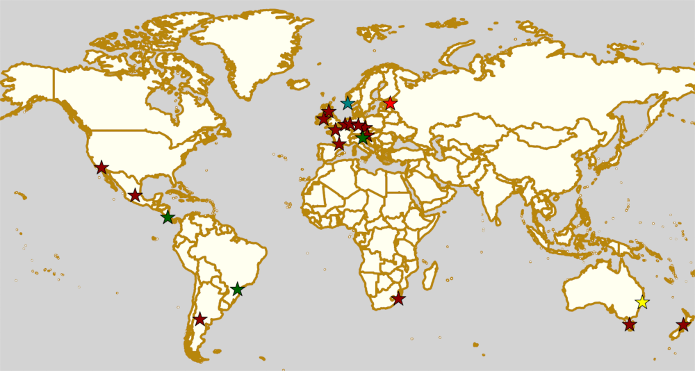
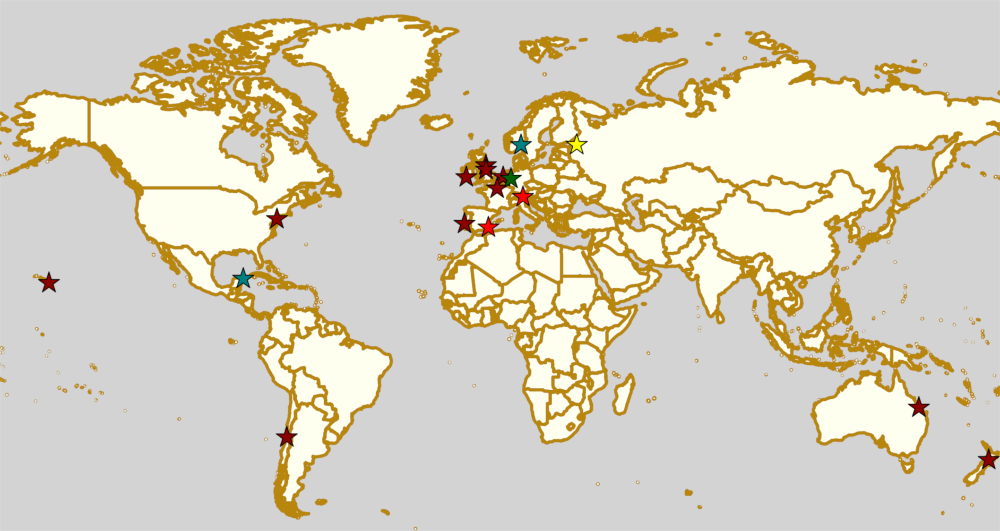

Weekend Highlights: 13 July 2019
This weekend's highlights are back to our 1 update format as this is a little quieter. There's a bunch of exciting "summer" events on, though, which we should highlight up here: in the UK, Eastbourne Extreme takes derby outside and to the coast for a 2 day mixed tournament; in France, Saint-Gratien once again hosts the pan-France Tournament of 6 Regions; and in Bundaberg, Australia, the 2019 SKATE of Emergency continues to raise funds for emergency services.
(We'd also like to highlight the next "Un sol para lxs oficialxs", raising travel funds for Argentinian officials to support Roller Derby across the country; and on a different note ALL-IN's Short Track Experiment event in Leeds, exploring the new ruleset and how it might help to sustain & develop the sport.)
The rules are, as usual: highlights limited to 1 event per country, with an "extra" event allowed for a different kind of fixture (so, 1 tournament and 1 bootcamp), or if they involve Scottish leagues (since we are the Scottish Roller Derby Blog). Other notability might also allow the extra event - great posters, notable teams, etc. (League birthdays may count as "special" enough, at our discretion ;) )
In a bid to make this list as useful as possible, we've avoided links to Facebook except where noted. (Links to Teams are to non-Facebook resources - Instagram, or actual team pages - we'd strongly recommend that Teams get themselves an actual webpage [we can help host one if you need help]).
Locations are roughly organised East-West (with things before the weekend out sequence at the start).

Guest Post: SKIR Golden Edition
Last month, Italy's largest Roller Derby tournament, Skate Im Ring (SKIR) held its Golden Edition, as always in Bolzano. Luckily for us, New Town Roller Derby's Hazzard was attending, and has been good enough to provide us with this guest article!
---
On the 22nd and 23rd of June, 8 Italian roller derby teams and a swathe of officials had arrived at Arena Ritten, just outside of Bolzano in the North of Italy. They were to participate in Skate Im Ring (SKIR) Golden Edition [link to Facebook] hosted by the Alp’n Rockets.
The fantastic Arena Ritten, host venue for SKIR 2019.
The weekend was the 4th edition of the SKIR and was its biggest edition so far. The tournament consisted of a day of single-period ranking games and a day of full games. The teams were split into two groups and then seeded to go head to head with their counterparts in the other group.
Meeting with two of the organisers of SKIR, Betty Burp and Billi, we chatted about the previous editions of SKIR.
Weekend Highlights: 06 July 2019
This weekend's highlights are back to our two update format.
The rules are, as usual: highlights limited to 1 event per country, with an "extra" event allowed for a different kind of fixture (so, 1 tournament and 1 bootcamp), or if they involve Scottish leagues (since we are the Scottish Roller Derby Blog). Other notability might also allow the extra event - great posters, notable teams, etc. (League birthdays may count as "special" enough, at our discretion ;) )
In a bid to make this list as useful as possible, we've avoided links to Facebook except where noted. (Links to Teams are to non-Facebook resources - Instagram, or actual team pages - we'd strongly recommend that Teams get themselves an actual webpage [we can help host one if you need help]).
There's not one, but two national championships decided this weekend, as the finals of the Finnish National Championships and the first ever ARDE Spanish National Championships both fall here.
Locations are roughly organised East-West (with things before the weekend out sequence at the start).

Weekend Highlights: 30 June 2019
This is the Sunday addendum edition of the highlights, for 30 June.
In a bid to make this list as useful as possible, we've avoided links to Facebook except where noted. (Links to Teams are to non-Facebook resources - Instagram, or actual team pages - we'd strongly recommend that Teams get themselves an actual webpage [we can help host one if you need help]).
This is a scrimmage-heavy update, but we approve of open scrims, so we're good with that.
Locations are roughly organised East-West (with things before the weekend out sequence at the start).
Sun: Niagara Park, NSW, Australia
Central Coast Roller Derby United host "Derbypalooza", a triple header of all kinds of roller derby!
- CRASH (NSW/ACT Mixed Gender) vs Wollongong Illawarra Roller Derby
- Junior Derby "pot luck" teams game.
- SCR (Central Coast Roller Derby United + S2D2) vs Sydney Roller Derby League (Sydney)
Event starts: 1230 Sunday (doors open)
Venue: Niagara Park Stadium, 18 Washington Avenue, Niagara Park, NSW, Australia
Sun: Durban, South Africa
Durban Roller Derby host one of their regular Social Skate events outdoors, after their first ever Short Track event on Friday.
Event starts: 0800 Sunday
Venue: Afro's (South Beach), 2 OR Thambo Parade, South Beach, Durban, KwaZulu-Natal, South Africa
Sun: Zürich, Switzerland
Zürich City Roller Derby host probably the "biggest" event of this Sunday addendum, a full 6-team quadruple header in one day! (We're not sure of the composition of the two mixed teams in the schedule...)
- Mixed Team versus Mixed Team
- Rolling Furies (Lausanne) versus Zürich City Roller Derby B-Team
- Zürich City Roller Derby B-Team versus Mixed Team
- Rolling Furies (Lausanne) versus Mixed Team
Only FTS listed bout is, of course, the Lausanne v Zürich B game.
Event starts: 1030 Sunday (doors open)
Venue: Sportanlage Fronwald, Fronwaldstrasse 115, Zürich, Switzerland
Sun: Amsterdam, Netherlands
[FACEBOOK LINK] [FTS LINK 1] [FTS LINK 2]
Amsterdam Roller Derby host a double-header of international roller derby.
- BattleStars (Amsterdam B) versus Västerås Roller Derby
- All Stars (Amsterdam A) versus Rebellion Roller Derby (Milton Keynes)
Event starts: 1145 Sunday (doors open)
Venue: Sporthal Zeeburg, Insulindeweg 1001, Amsterdam, Netherlands
Sun: Angoulême, France
Roller Derby Angoulême host "Le tour du track en 80 jams", a double header of roller derby with a lot less info than we'd like.
- mixed gender (Open To All) game
- WTFDA-gender game.
FTS links pending info regarding actual bouts
Event starts: 1300 Sunday (doors open)
Venue: Nautilis Centre Aquatique Patinoire, route Mesniers Fontastier, Angoulême, France
Sun: York, UK
York Minxters host one of their regular open scrims - with alternating WFTDA-gender and Open-To-All-gender policy jams for maximum inclusivity.
Event starts: 1600 Sunday (warm up)
Venue: Energise Sports Centre, Cornlands Road, York, UK
Sun: São Paulo, Brazil
Ladies of Helltown celebrate the Festa Junino with a double helping of open scrimmage - a non-contact scrimmage for rookies, and a full contact scrimmage for experienced skaters!
- No-contact Scrimmage
- Scrimmage
Event starts: 1430 Sunday (non-contact)
Venue: Clube Tietê - Centro Esportivo. Av. santos Dumont 843, São Paulo, Brazil
Sun: Buenos Aires, Argentina
2x4 Roller Derby are getting in a little practice before Team C head off to the Impakto Mixto next weekend, and are hosting a double scrimmage to get in shape.
- B/C category, WFTDA-gender scrimmage
- All experience levels, Open-To-All genders scrimmage.
Event starts: 1800 Sunday
Venue: Avenida Curapaligüe 1100, 1406 Ciudad de Buenos Aires, Argentina
Weekend Highlights: 29 June 2019
This weekend's highlights are back to our two update format.
The rules are, as usual: highlights limited to 1 event per country, with an "extra" event allowed for a different kind of fixture (so, 1 tournament and 1 bootcamp), or if they involve Scottish leagues (since we are the Scottish Roller Derby Blog). Other notability might also allow the extra event - great posters, notable teams, etc. (League birthdays may count as "special" enough, at our discretion ;) )
We've broken our rule slightly for Germany this weekend, as it's important not to miss the Mine Monsters' birthday game, but also it's a good weekend for the German Bundesliga in Erfurt. And as usual there's so much stuff in France, we're giving them two entries for two two-day events...
There's also two firsts this weekend; the first ever Tasmanian Tournament kicks off in Australia, and the first ever Norwegian National Tournament (and Championship) is this weekend in Sadnes!
In a bid to make this list as useful as possible, we've avoided links to Facebook except where noted. (Links to Teams are to non-Facebook resources - Instagram, or actual team pages - we'd strongly recommend that Teams get themselves an actual webpage [we can help host one if you need help]).
Locations are roughly organised East-West (with things before the weekend out sequence at the start).
Weekend Highlights: 23 June 2019
This is the Sunday addendum edition of the highlights, for 23 June.
In a bid to make this list as useful as possible, we've avoided links to Facebook except where noted. (Links to Teams are to non-Facebook resources - Instagram, or actual team pages - we'd strongly recommend that Teams get themselves an actual webpage [we can help host one if you need help]).
There's an unprecedented number of Sunday tournaments in France on the 23rd, so we've picked two of them (the most fun, and the most "international") as a representation. There's actually 5 in total!
There's also one Monday event in the list, so watch out for that in Edinburgh, especially if you're interested in the Officiating side of the sport.
Locations are roughly organised East-West (with things before the weekend out sequence at the start).
Sun: Keysborough, VIC, Australia
Kingston City Rollers host another of their Mixer events, open Scrimmage triple events, where you're encouraged to try out new things (bench coaching? NSOing in a different position?). There are, as always, three levels of scrimmage, in sequence at these events:
- Non-contact Scrimmage (2x15min)
- Prebouting/Low-contact Scrimmage (2x20min)
- "Bout" Scrimmage (2x30min)
Event starts: 1630 Sunday
Venue: Springers Leisure Centre, 400 Cheltenham Road, Keysborough, VIC, Australia
Sun: Mount Barker, SA, Australia
Rockabellas Roller Derby League host what we think is the only public Roller Derby bout in Australia this Sunday - a double header, featuring both adult and junior derby home-teams!
- "Salt" versus "Pepper" Juniors home-team Bout
- Toxic Cherries (Rockabellas: Mount Barker) versus "Prim Reapers" (Rockabellas: Noarlunga)
Event starts: 1530 Sunday
Venue: Cornerstone College, Mount Barker, South Australia
Sun-Fri: Visby, Gotland, Sweden
Visby Valkyries are off on their annual Rauken Roller Derby Camp - a week long retreat to an isolated output on the other side of Gotland to Visby, open to the whole Swedish derby community! This includes training from Stockholm All-Stars' Skandi Crush and Rainbow Sprite, as well as officiating sessions with Major Bitter.
Event starts: 1600 Sun (bus leaves Visby)
Venue: Gangvidefarm, När Gangvide 503, Stånga, Gotland, Sweden (Bus from Visby)
Sun: Augsburg, Germany
Rolling Thunder Augsburg host "AC versus DC", an open-to-all genders, mixed scrimmage attached to their bootcamp on Saturday (which seems to have no public record, other than the reference in this scrimmage event!).
Event starts: 1500 Sunday
Venue: TV Augsburg Skaterhockey, Gabelsbergerstr. 64, Augsburg, Germany
Sun: Épinal, France
[FACEBOOK LINK] [FTS LINK 1] [FTS LINK 2] [FTS LINK 3]
Reaper's Crew host a triple-header round robin of international derby (thanks to the attendance of Blackland, from over the border in Belgium).
- Blackland Rockin' K-Rollers (Charleroi, Belgium) versus Reaper's Crew (Épinal)
- Blackland Rockin' K-Rollers versus Les Flèches Revêches (Dijon)
- Les Flèches Revêches versus Reaper's Crew
Event starts: 1200 Sunday (first game)
Venue: Complexe sportif de la plaine de Soba, route d'Archettes, Épinal, France
Sun: Antwerp, Belgium
Antwerp Roller Derby host an international bout against Edinburgh's finest!
- One Love Roller Dolls (Antwerp A) versus Auld Reekie Roller Derby All-Stars (Edinburgh A)
Event starts: 1100 Sunday ?
Venue: Sporthal Kiel, 2 August Ley Weg, Antwerp, Belgium
Mon: Edinburgh, Scotland
Kat Malin-August's series of NSO Workshops is now at its fifth edition, and is doing something a little different. Previous sessions have been focused on a particular NSOing role, but this one covers what we'd call "essential officiating ambient knowledge". That is: all the things that experienced officials "just pick up" over years of officiating, but never think to actually have a session on.
This will include, but not limited to: Completing and maintaining a games history, how to apply for tournaments, how WFTDA Cert + Online Training works, recommendations for paraphernalia (whistles, stopwatches etc), and recommendations for other resources.
Sign up is still open, and as always, these workshops are free.
Event starts: 1900 Monday
Venue: CodeBase, Argyle House, 38 Castle Terrace, Edinburgh, Scotland
Sun: Birmingham, UK
[FACEBOOK LINK] [FTS LINK] [FTS LINK]
Birmingham Blitz Dames host the 4th fixture in this years first Boudicca Cup, the B-teams oriented UK tournament series.
- Furies (Manchester B) versus Crucibelles (Sheffield Steel B)
- Bomb Squad (Birmingham B) versus North Wales Roller Derby B
Event starts 1030 Sunday
Venue: Doug Ellis Sports Centre, 150 Wellhead Ln, Birmingham, UK
Sun: Rennes, France
Roller Derby Rennes present a Harry Potter themed mini-tournament event, "Harry Pot d’Beurre* et les gros hits de la mort". Four "house teams" formed by open subscription play short format games (1 period each) for the Cup, followed by a scrimmage betweeen Rennes' B skaters and Le Mans B.
- Pouffsouffle (Hufflepuff) versus Serdaigle (Ravenclaw)
- Gryffondor (Gryffindor) versus Serpentard (Slytherin)
- Third Place
- Final
- Mortal Condate (Rennes B) versus Chicaneuses (Le Mans B) [Scrimmage]
Event starts: 1200 Sunday
Venue: Gymnase Félix Masson, 5 Allée des Cévennes, Rennes, France
Sun: Necochea, Argentina
Calacas Acidas host a "Triangular Acido", a triple-header round robin (the most popular format in Argentina, we think) event. This one is slightly unusual, as two of the competing teams are hybrids: Calacas Acidas + MDQueens, and Brujas + Rebeldes del Asfalto!
- Teams:
- Calacas Acidas (Necochea) + MDQueens (Mar del Plata)
- Atomic Bombs Roller Derby (Lanùs)
- Brujas Roller Girls (Bahía Blanca) + Rebeldes Asfalto (Mar del Plata)
These are not listed in FTS, as two of the teams involved are not rateable
Event starts: 1000 Sunday ?
Venue: 73 Y 36 EET Nº3, Necochea, Argentina
BCR Host the final game day of Champs Tier 2 North
Bairn City Rollers started off their 2019 and their champs campaign in the best way possible (you can read more about that here) . Their two wins in their first two Champs games saw them sit third in their group with six points despite having played one less game than the two teams above them, who had played three each. Their next two games came against those two teams: first they took on North Wales Mens and then T&F: Inglorious B*Stars. Both opponents took the wins in very hard fought games ending their 2019 Champs season 1st and 2nd in the group, 2 weeks ago.

Whilst those two teams have finished their champs season, the other teams in the group still have one more game and each team still has everything to play for. The last game day of Tier 2 North takes place on Scottish ground, with BCR hosting this fantastic battle at Grangemouth Sports Complex on the 29th of June.
This double header could not have been set up more perfectly for the final set of games, as each match is a decider and will see the teams involved fighting for their final position against their opponent. Hosts BCR will be taking on The Inhuman League, with the winner of that game finishing 3rd in the group and the loser coming 4th. Whilst the other game will see Knights of Oldham play Teesside Skate Invaders, with the loser unfortunately ending up with the wooden spoon for the tier, and facing potential relegation.
Both games are shaping up to be quite a close battle as by their results so far each are evenly matched. So every team will be pulling out all the stops to get that final win in this years champs competition to finish above their opponents.
Doors are at 1.15pm and tickets are only £5 on the door, find out more and keep up to date on the Facebook event page https://en-gb.facebook.com/events/2402082363156371/

Weekend Highlights: 22 June 2019
This weekend's highlights are back to our two update format.
The rules are, as usual: highlights limited to 1 event per country, with an "extra" event allowed for a different kind of fixture (so, 1 tournament and 1 bootcamp), or if they involve Scottish leagues (since we are the Scottish Roller Derby Blog). Other notability might also allow the extra event - great posters, notable teams, etc. (League birthdays may count as "special" enough, at our discretion ;) )
This is a good weekend for tournaments - with two tournaments of interest to us in the USA (ECDX, where a lot of European, as well as US, teams try to get last-minute games for WFTDA eligibility requirements; and Hawai'i's Big Island Brawl, as Okinawa are there); but also two National or quasi-National tournaments in Europe (Spain's first ever Division 2 playoffs, and the sort-of-Italian-national-tournament Skake Im Ring).
In a bid to make this list as useful as possible, we've avoided links to Facebook except where noted. (Links to Teams are to non-Facebook resources - Instagram, or actual team pages - we'd strongly recommend that Teams get themselves an actual webpage [we can help host one if you need help]).
Locations are roughly organised East-West (with things before the weekend out sequence at the start).
Guest Post: Saving RGA by Becoming KRD
Recently, Kaiserslautern's Roller Girls of the Apocalypse underwent an extensive rebrand - not just the kind where you change a single noun, but a complete alteration of their league to "Kaiserslautern Roller Derby", along with a complete replacement of their league logo and colours!
We have been lucky enough to persuade KRD's Public Relations Chair, Felicity Fleet, to write up their thoughts on the rebranding process - and what it means to the league for us.
This article has also been hand translated by KRD's Lena Albert into German [available by clicking the Deutsch link in the left pane under "Scottish Roller Derby Blog"]!
My first roller derby boot camp as an assessed skater provided me with an understanding of the Roller Girls of the Apocalypse (RGA) brand in the wider European roller derby community. “Some years RGA is really good, and some years we wonder ‘what happened’?” a veteran German skater commented to me. This would become a familiar refrain as I began to travel and play with or against other teams. As a skater developed in RGA’s Fresh Meat program, I could easily answer “what happened”: A new skater with little experience, like me, replaced a veteran skater. And it’s no one’s fault. That’s what RGA is as a league.
RGA is a German league in Kaiserslautern with membership primarily from the surrounding American military community. If you don’t know much about the U.S. military, here’s a quick debrief: U.S. military members generally stay in one place for 2-4 years before they are required to move for their job. In 2018, RGA lost 13 skaters or officials to military moves. By the end of 2019, 12 more players will have left.
The consequence is that RGA serves as a great feeder league. We have sent well-trained skaters to top leagues in the USA, and we have trained a number of promising new skaters in our 6-month Fresh Meat program who are forced to take their potential elsewhere shortly after they pass assessments. During the years we see a large exodus of members, the role of our veteran players in the league changes from “valued player” to “valued trainer”. Our vets will spend most of their own training time helping newer members learn the game and gain skills, while losing their own ability to train at a higher level. Consequently, our veteran skaters play the next year or two at a lower competitive level than they are capable, since most of their teammates are new. Surrounding teams meet us on the track and ask “what happened?” to our level of play. Then the newer players become good players, the exodus begins, and the cycle continues.
Eventually, we had to question if this is a sustainable model for our league. We had to have some hard conversations and genuine self-reflection as we considered our brand in the community and what it means to be competitive.
Skating at the tip of Africa: Roller Derby in South Africa
We've written a bit about South African roller derby when covering their national tournament, but there's a lot more to be said about the community than that.
Geography informs the way in which Roller Derby develops in a country, and South Africa's is very different to what we're used to in Europe.

Map of South Africa's population density, with leagues marked. [Underlay: Htonl (Public domain, Wikipedia)]
South Africa is a large country - its area is about twice that of France - but with a relatively small population - about 80% that of France. And that population is very unevenly spread across the country: the dense province of Gauteng, containing Johannesburg and Pretoria, contains about a quarter of South Africa's entire population, with another fifth concentrated around Durban in the south-east province of KwaZulu-Natal, and a further eighth around Cape Town in the Western Cape.
Unlike in most European countries, then, the 4 leagues of South Africa - located in those 4 named cities - have difficulty even travelling to play each other on a regular basis.
Add to this the fact that the only other country with Roller Derby in Africa is Egypt, at the other end of the continent, and you can get a feel for how dedicated and unique the solutions adapted by the South African leagues have had to be.
In this article, we'll be discussing in some depth both those problems, and their solutions, so click on to read more: